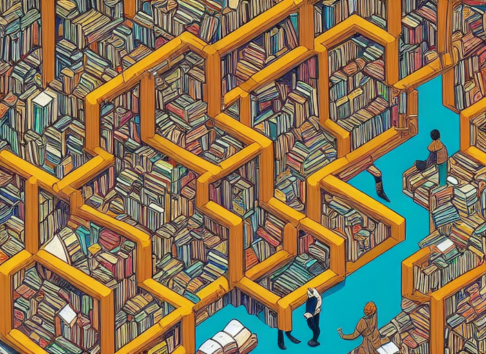
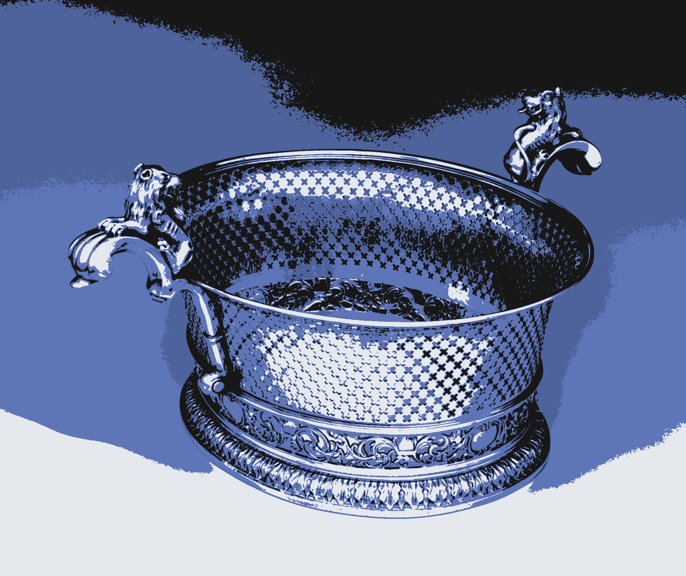
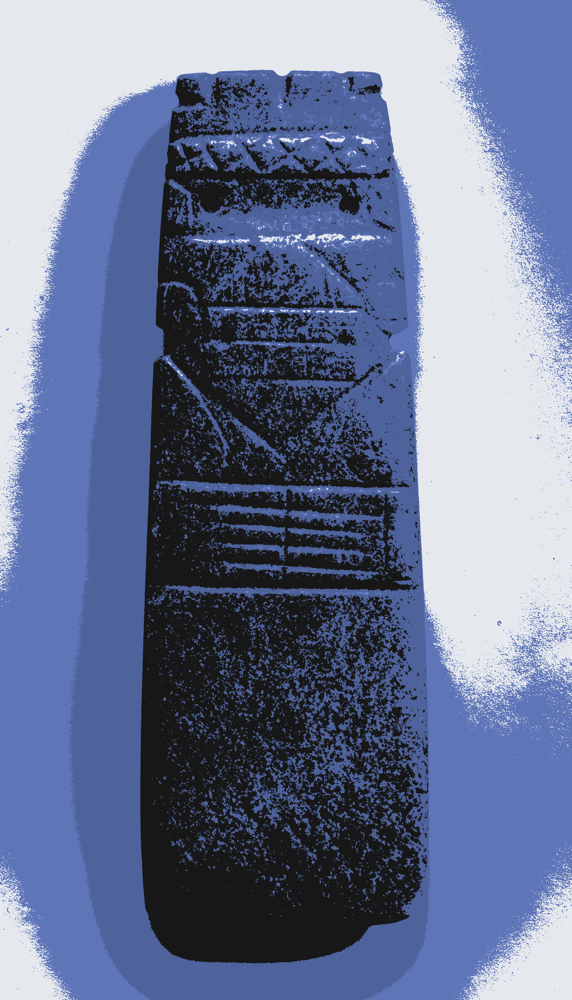

Narrativa

Ojos Verdes
Sobre la soledad en un futuro posible.

El hombre que se perdió en una biblioteca
Sobre los recovecos que se esconden tras las grandes bibliotecas.

Hay peores crímenes
Sobre el encuentro casual entre un literato aficionado y un pirómano profesional.

Almizcle y Tabaco
Sobre la sombra del silencio que recorre nuestros pueblos.

La biblioteca de Cantor
Sobre las matemáticas que esconden las bibliotecas infinitas.

Como un hijo más
Sobre la fragilidad de la mente humana.